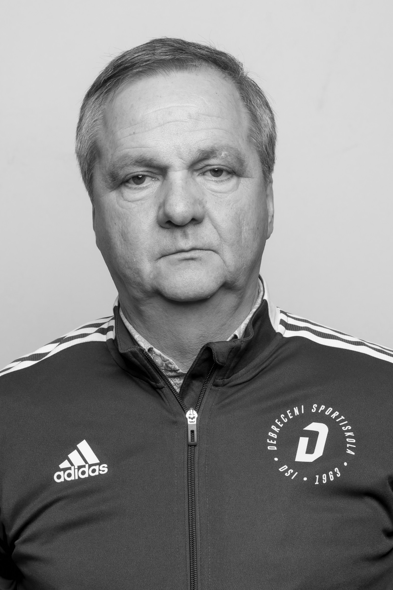

Egy kivételes ember
Dr. Pap Zsolt nemcsak kiváló sportember, hanem elkötelezett orvos és közösségi ember is volt. Pályafutása során sokat tett a debreceni triatlonsportért, fiatal sportolók felkészítéséért, és mindig segített, ha valakinek szüksége volt rá.
Itt olyan történetek, idézetek és visszaemlékezések olvashatók, amelyeket barátai és sporttársai osztottak meg róla.
